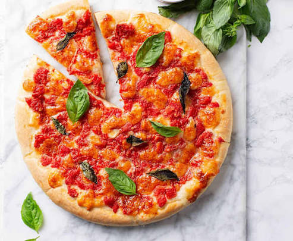
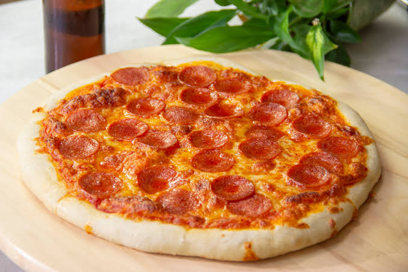
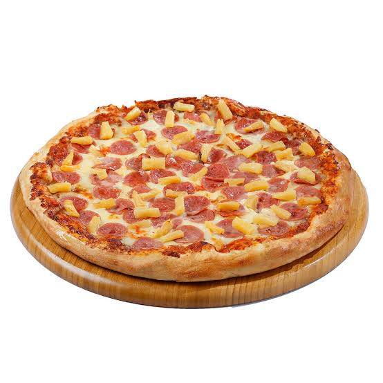
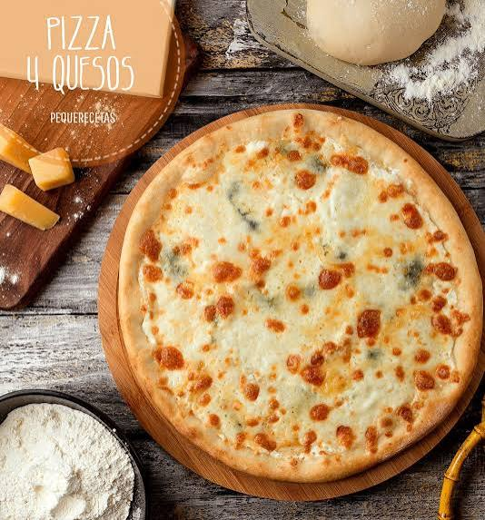
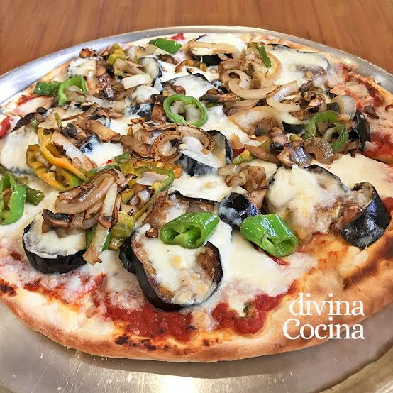

Descubre nuestras recetas
Aprende a preparar pizzas deliciosas en casa, desde las recetas clásicas hasta nuevas combinaciones.
Todas nuestras recetas

Pizza Margherita
Una pizza italiana clásica con tomate, mozzarella y albahaca fresca.
Ver ingredientes y preparación
Pizza Pepperoni
Una pizza con salsa de tomate, queso mozzarella y pepperoni.
Ver ingredientes y preparación

Pizza cuatro quesos
Una pizza cremosa con una deliciosa combinación de quesos.
Ver más recetas fáciles
Encuentra tu próxima pizza favorita
Explora las recetas más elegidas por nuestros lectores o descubre opciones sencillas para comenzar.
Pizza Margherita
Una receta tradicional italiana que destaca por sus ingredientes sencillos.
Ingredientes
- 250 g de harina de trigo
- 150 ml de agua tibia
- 5 g de levadura seca
- 1 cucharada de aceite de oliva
- 150 g de salsa de tomate
- 200 g de queso mozzarella
- Hojas de albahaca al gusto
- Sal al gusto
Preparación
- Mezcla el agua tibia con la levadura.
- Agrega la harina, la sal y el aceite.
- Amasa hasta obtener una masa uniforme.
- Deja reposar la masa hasta que aumente de tamaño.
- Extiende la masa y agrega la salsa de tomate.
- Distribuye el queso mozzarella.
- Hornea a 220 °C hasta que la masa esté dorada.
- Agrega la albahaca y sirve caliente.
Tiempo aproximado: 40 minutos, más el reposo de la masa.
Pizza Pepperoni
Ingredientes
- 1 base de pizza
- 100 g de salsa de tomate
- 200 g de queso mozzarella
- 80 g de pepperoni
- Orégano al gusto
Preparación
- Coloca la base de pizza sobre una bandeja.
- Distribuye la salsa de tomate.
- Agrega el queso mozzarella y el pepperoni.
- Añade un poco de orégano.
- Hornea a 220 °C hasta que el queso se derrita y la base esté dorada.
Tiempo aproximado: 25 minutos si la base ya está preparada.
Pizza Hawaiana
Ingredientes
- 1 base de pizza
- 100 g de salsa de tomate
- 200 g de queso mozzarella
- 100 g de jamón en trozos
- 100 g de piña en trozos
Preparación
- Coloca la base de pizza sobre una bandeja.
- Extiende la salsa de tomate.
- Agrega el queso mozzarella.
- Distribuye el jamón y la piña.
- Hornea a 220 °C hasta que el queso se derrita y la base esté dorada.
Tiempo aproximado: 25 minutos si la base ya está preparada.